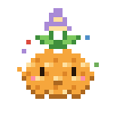

M ask MyraF focusdouble-click new noteCtrl+K quick capturespace drag to panCtrl+\ just the board

What’s new ✦
Dress up MyraHats, glasses, a balloon… and she wears her outfit everywhere she shows up.
GeneralMyraBoardWidgets
Dress up Myra
Drag any widget by its title to move it to either side.
Hi, I'm Myra!
I'm a little cloudberry who lives in your boards. Like cloudberries, ideas only grow where conditions are just right. Let's make yours. It takes about a minute.
Make it yours
Pick my color and how the app looks. You can change these anytime.
My colorMe in the dock and the logo
ThemeLight, dark, or match your system
My thinking
I think with Claude Code on your computer. My helpers are connections in your Claude account: Mobbin finds real app screens, Higgsfield makes images (it costs credits, so I always ask first).
You're trying the web version, so I can't connect to Claude, Mobbin or Higgsfield here. Everything else works! Download the desktop app and I'll connect to all three.
Not ready yet? That's fine, skip it. Connect later, then tap here or in Settings.
How I talk
Some people like a chatty buddy, some like quiet. Both are great.
How chattyQuiet only talks when you ask
Remember our chatsSaved in your board files on this computer
Your board
How cards feel when you make them.
New note colorWhat a fresh note starts as
You're all set!
Want a quick tour? I'll show you around and you can try things as we go. About a minute.
Your first boardAn example to look at, or a clean start
Everything here lives in Settings (the ⚙ next to Myra), including this tour.
Myra
Licenses
Loading…
Settings
Look
ThemeLight, dark, or whatever your system is using
Icon styleRegular is plain outlines. Duotone adds a soft tint to the icons in the bottom bar and Myra's chat header.
Your cursor
Cursor color
Myra
Her nameCall her whatever you like. She answers to it everywhere.
How lively she isCalm: she sits still (no hops, wiggles or breathing). Calmest: still, with softer, muted colors.
Her colorMyra in the dock and the logo
How chatty she isQuiet only talks when you ask. Chatty adds little tips and cheers.
Remember chatsChats are saved in your board files on this computer. Off forgets each chat as you go.
How many messages to keepOlder messages fall off the top
Saved chatsDeletes Myra's chat history from every board
Obsidian vaults
Myra can show notes from your Obsidian vaults on a board. She only reads, and only where you allow it: connect a vault here, then give a project or a board access from its right-click menu (Vault access). A folder you mark off-limits, and any note tagged #private, is never read.
Claude usage
Today–
Last 7 days–
Since you started–
Just Myra's share, counted on this computer. Your plan's limits cover everything you do with Claude.
Voice memo writing
WhisperOff.
Myra's helpers
This is the web version, so Myra can't reach Claude Code or your helpers from here. Download the desktop app to connect them.
Helpers are the connections in your Claude account. Connect one in Claude's settings, then come back and tap .
Widgets
Turn on the ones you use. The Boards panel always stays, since it's home to your boards and Settings.
Arrange themDrag a widget by its title into any spot on either side
The board
Default fontFor notes, titles, checklists, collections and docs that don't have a font of their own. Menus and panels keep Myra's font.
ColorsThe background, dots, panels and accent. Right-click any board to give just that board its own background.
Grid shapeDots, or something a little cuter
New note colorWhat a fresh note starts as
Your boards
Saved on this computerYour boards never leave your computer
MyraWhere ideas thrive. A canvas with Myra the cloudberry to help. Free and open source (MIT).
UpdatesChecking for a new version…
Toolbar
Icon sizeHow big the tools at the bottom are. If they don't all fit on your screen, the extras tuck into a ··· menu at the end.
Your toolsSwitch tools on or off, and drag to change their order. Shortcuts still work for tools you hide.
Camera & microphone
CameraFor video cards
MicrophoneFor voice memos and videos
New here, or need a refresher?Myra shows you around in about a minute
💌
Tell me what you thinkIdeas, bugs, little wishes: they go to this version’s GitHub issues.
made with care by
Stephen Chiang
Like cloudberries, ideas only grow where conditions are just right. Myra tries to be that place.
Built on MochiboardMyra grew from Mochiboard, Jessa Wolfe's open-source planning canvas (MIT). Mochiboard, Mochi and their art are hers and aren't part of Myra.
Open-source licensesMyra's own license, and the software made by others that Myra includes.